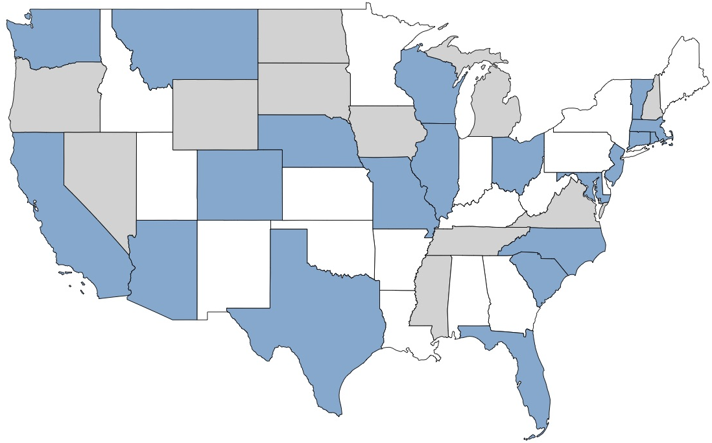
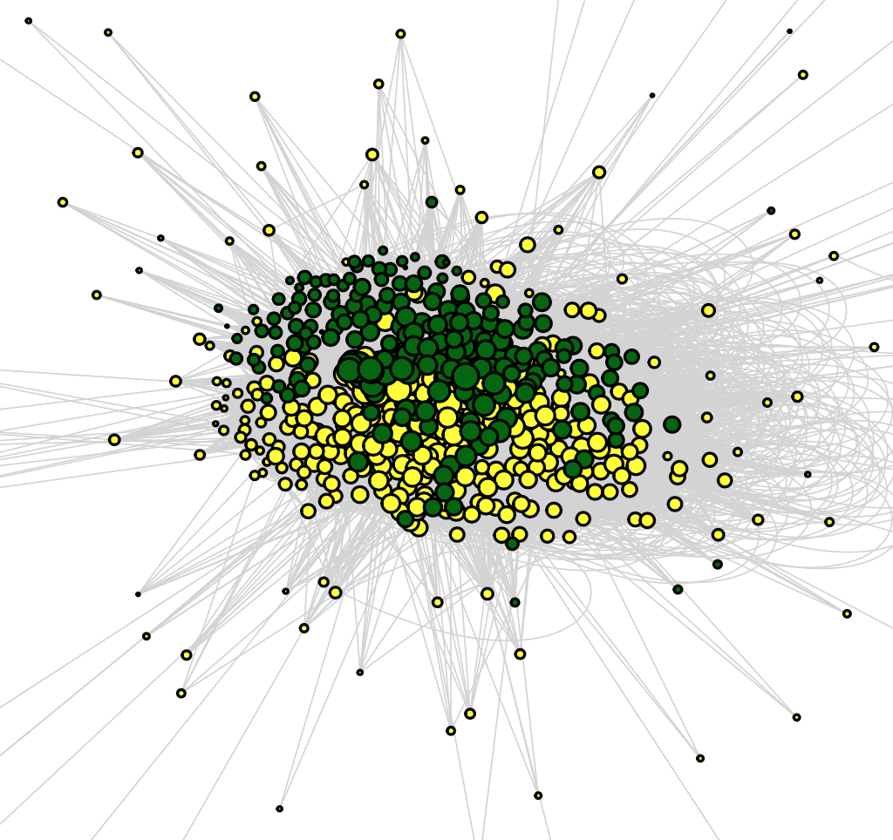
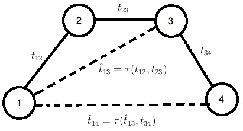

I'm a data scientist and PhD candidate in the MS&E department at Stanford University. My interests include polarization, modeling culture, trust, and criminal justice. I currently work with Sharad Goel and Amir Goldberg. This summer (2017), I will be joining the core data science team at Facebook for a research internship.
Before coming back to school, I worked at Airbnb on search, experimentation, knowledge sharing, and building out the data science team. I still consult for small companies on data matters.
You can contact me at overgoor {at} stanford {dot} edu.
|  |
A large-scale analysis of racial disparities in police stops across the United States
Using public record requests we compiled and analyzed a large dataset of over 130M state patrol stops in 31 U.S. states. We find that minority drivers are persistently more likely to be searched, cited, and arrested than white drivers. We released the data, for other researchers to work with. This work is done in collaboration with Emma Pierson, Camelia Simoiu, Sam Corbett-Davies, Vignesh Ramachandran, Cheryl Phillips, and Sharad Goel. |
|  |
Cultural integration following post-merger integration
We trace the cultural integration of two firms based on analyses of email content before and after their merger and explore how patterns of cultural assimilation that individuals follow after the merger relate to their subsequent career outcomes. This project is part of the computational culture lab in collaboration with Amir Goldberg and Sameer B. Srivastava. |
|
Product data science at Airbnb I was at Airbnb from 2012 to 2016. As the first product data scientist, I worked across the company, but my main focus was search. I also worked on data tools, including the experimentation platform and a system to share knowledge and findings within the company. I wrote a few external blog posts during my time there: on search, experimentation, and the knowledge repository. |
|  |
Trust in the CouchSurfing community
I worked with CouchSurfing to study how trust gets signaled and propagated in the community. We found linguistic markers that are highly predictive of distrust, and that trust relations are transitive enough to improve predicting the valence of new ties. This work was done with Bogdan State, Ellery Wulczyn, and Chris Potts. |